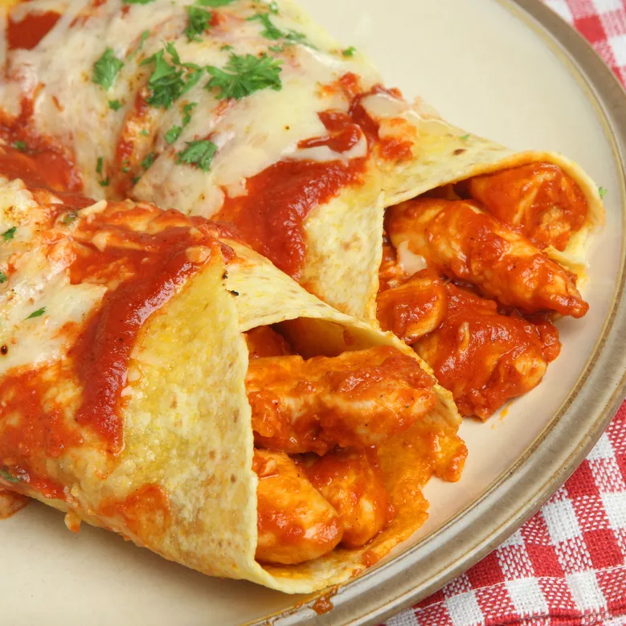

Enchiladas

This chicken enchilada recipe is easy to make with tortillas, tender chicken, and a deliciously cheesy sauce for a family-pleasing Mexican meal.
Ingredients
- 1 tablespoon olive oil, or as needed
- 4 skinless, boneless chicken breast halves
- 1 onion, chopped
- 1 ¾ cups shredded Cheddar cheese, divided
- ½ pint sour cream
- 1 tablespoon dried parsley
- ½ teaspoon dried oregano
- ½ teaspoon ground black pepper
- 1 (15 ounce) can tomato sauce
- ⅓ cup chopped green bell pepper
- 1 clove garlic, minced
- 1 tablespoon chili powder
- ½ teaspoon salt (Optional)
- ½ cup water (Optional)
- 8 (10 inch) flour tortillas
- 1 (12 ounce) jar taco sauce